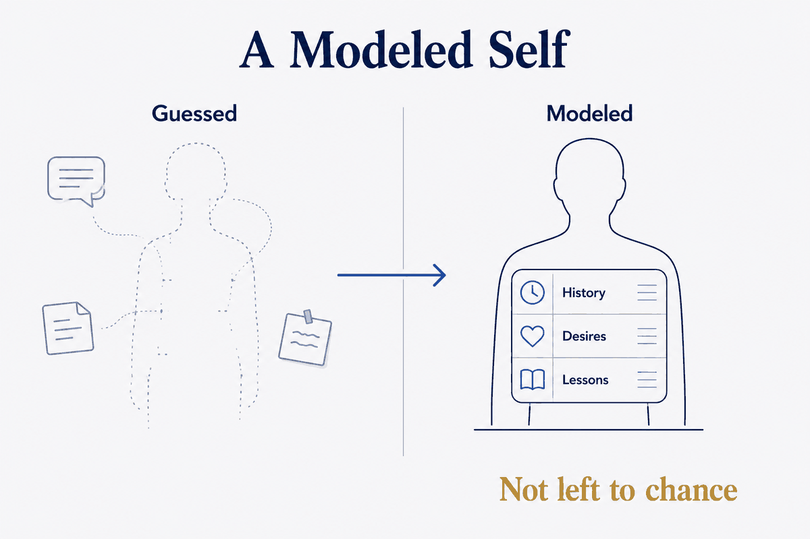

Your history, desires and lessons captured as structured data — not left to chance.

Your history, desires and lessons captured as structured data — not left to chance.
History, desires and hard-won lessons captured as structured data, so AI works from a model of you instead of whatever it happens to remember this session.